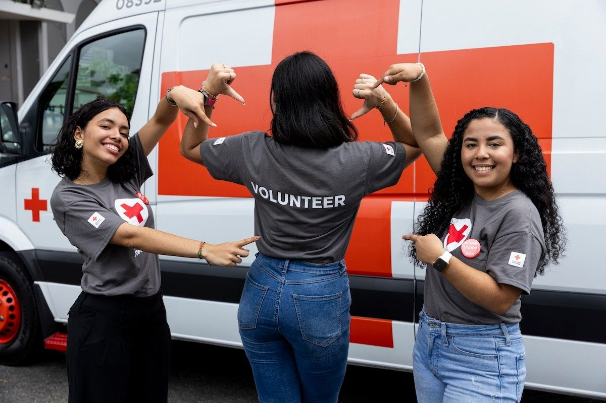

01 / RELIEF
A place to feel safe.
After a home fire or disaster, the Red Cross helps provide shelter, food, and comfort when familiar things are suddenly gone.
Explore disaster reliefA warm blanket. A safe place to sleep. Blood when it’s needed most. Your support helps the Red Cross turn care into action.

A tradition of being there.
Of the nation’s blood is supplied
by the American Red Cross.
WHY YOUR SUPPORT MATTERS
Emergencies don’t wait for a convenient time. Together, we can help people face what comes next.
After a home fire or disaster, the Red Cross helps provide shelter, food, and comfort when familiar things are suddenly gone.
Explore disaster reliefBlood can be essential for surgery, cancer treatment, and serious injuries. Donors help keep this vital resource available.
Learn about giving bloodFrom preparing neighbors for emergencies to supporting military families, volunteers put compassion to work in their communities.
Meet your next purpose
SMALL ACTS. REAL CONNECTION.MORE THAN A MOMENT OF HELP
Behind every emergency is a person. Someone who needs a meal, a conversation, or simply the reassurance that they don’t have to face it alone.
Supporting the Red Cross helps make those moments of care possible. And there’s more than one way to be there.
Find where you fitYOU HAVE SOMETHING TO GIVE
Give what you can, in a way that works for you. Every act of support starts somewhere.
MAKE GENEROSITY A HABIT
Financial gifts help the Red Cross deliver its humanitarian mission. Choose an amount to explore a little generosity.
Interactive concept only. No payment is collected here.
A LITTLE CLARITY
Get to know the mission
behind the movement.
It brings together volunteers and supporters to help people prepare for, respond to, and recover from emergencies. Its work includes disaster relief, blood services, lifesaving training, and support for military families. Read the mission ↗
No. You can explore volunteering, donate blood if you’re eligible, or learn lifesaving skills. Different roles and commitments make it possible to find a way to help that fits your life.
Review the Red Cross’s official financial information and reporting to understand how contributions support its work. See where your money goes ↗
This is an independent UI demonstration. It doesn’t process gifts, take appointments, or collect personal information. For real donations and opportunities, use the official Red Cross links provided here.
THE WORLD NEEDS MORE PEOPLE WHO CARE